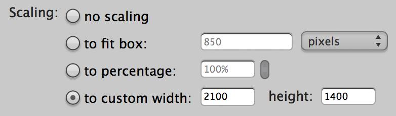
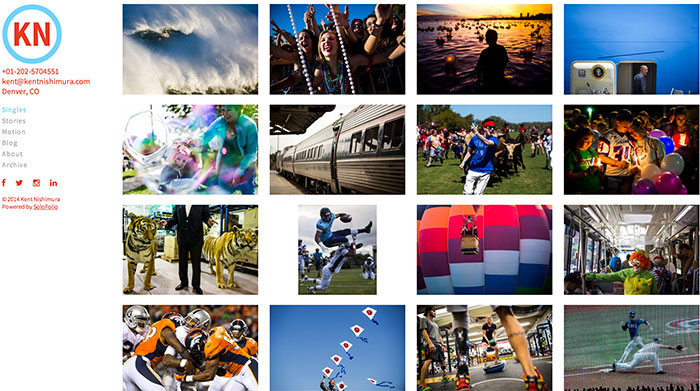
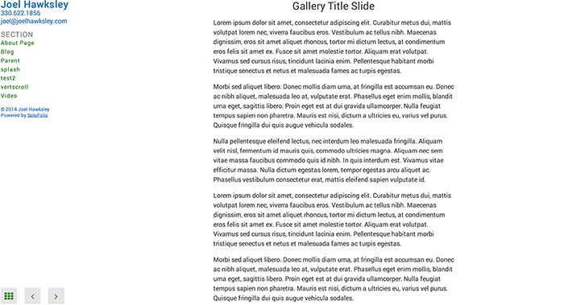
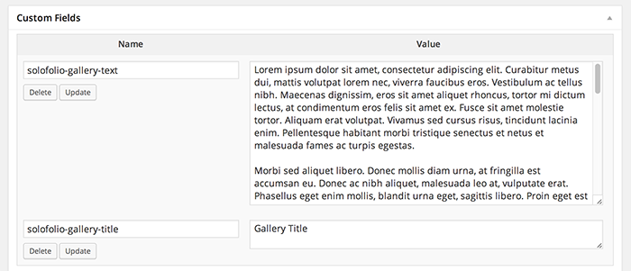

Galleries
Pages: Add new
Give the page a title. Do not add body text content. Resize images to fit 2100x1400px on the longest edge, saved at JPG quality 6. 
Add Media > Insert Gallery
Upload images and insert captions. em Note: Link To and Columns options in Gallery Settings are not used by SoloFolio.
Auto Play
To make a gallery automatically advance, go to the Text view for the page, then add the following code to the gallery shortcode:
[gallery ids="..." autoplay="true" speed="3000"]
Where the value for speed is the time in milliseconds that each image should be shown.
Show Thumbnails by Default

To show thumbnails by default, go to the Text view for the page, then add the following code to the gallery shortcode:
[gallery ids="..." thumbs="true"]
Title Slides

To add a title slide to a gallery, set the solofolio-gallery-title and solofolio-gallery-text custom fields.
